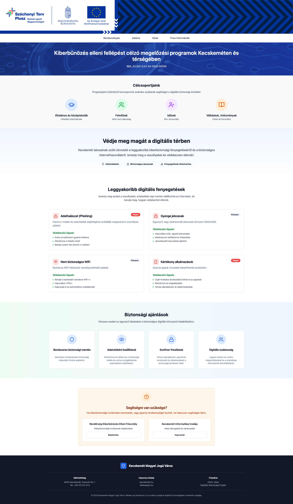
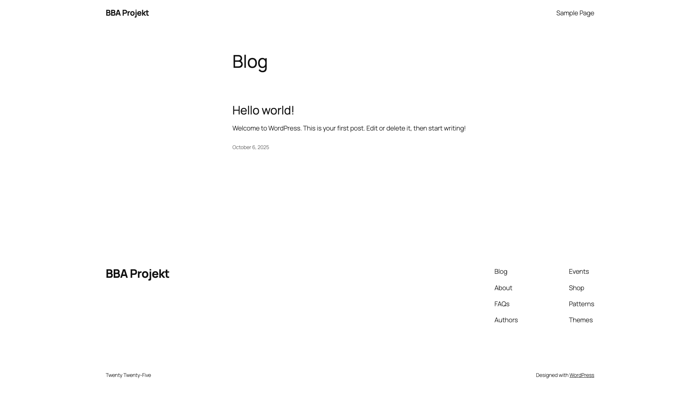

Visual Testing Report
Generated on: 2025-10-06T13:20:48.565Z
Screenshot Comparison
Next.js (Original)

WordPress (Converted)

Test Results
✓ Screenshots captured
✓ Responsiveness tested
✓ Interactivity tested
✓ Accessibility checked
✓ Performance measured
Recommendations
Compare screenshot pairs visually for layout consistency
Verify all interactive elements work as expected
Check that responsive design matches across devices
Ensure WordPress performance is acceptable
Validate accessibility features are functioning